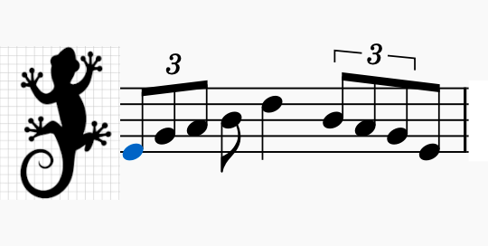

Practice is a practice session included in GeCo-Tools tool that produces melodic sequences importing a series of intervals from a preset (in GeCo syntax). Each sequence is delivered as audio (playback) and as standard music notation, and can be exported as a MIDI file.
Set the clef key signature for the score display. This setting directly affects the MusicXML before rendering: it does not change the audio, MIDI, or note pitches—only the sharps and flats displayed in the clef. You can change it freely even after importing a preset, without having to re-import.
Applied to the current sequence after import. Each operation contacts the server and re-renders the notation.
.mid file,
ready to import into any DAW or notation software..txt file containing sequence settings. For compatibility reasons a GeCo-Tool
exported .txt file can also be imported (for example, scales 🎹).The animated circle (top left) visualises the chromatic scale as a clock-face. During playback, active notes light up in gold and arcs trace the melodic intervals traversed. The first arc (sequence start) and the last arc are highlighted in white.
After import, a row of coloured boxes shows the signed semitone interval between each
consecutive pair of notes (+n = ascending, −n = descending).
Restores all parameters to their defaults and clears the score. The page reloads completely.
Hover over (or tab-focus) any control to see a short description in the help strip at the bottom of the panel.
